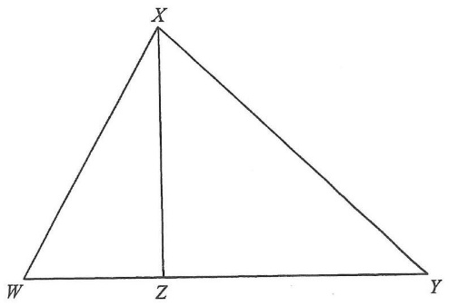

Use the given side lengths to recognise that \(\triangle XZW\) is right-angled at \(Z\).
\[ XZ^2 + WZ^2 = 60^2 + 25^2 = 3600 + 625 = 4225 \]
\[ XW^2 = 65^2 = 4225 \]
Since \(XZ^2 + WZ^2 = XW^2\), the converse of Pythagoras' theorem gives:
\[ \angle XZW = 90^\circ \]
Now use the right angle at \(Z\) to apply Pythagoras' theorem in the larger triangle \(XZY\).
Actually \(XZ\) is already known: \(XZ = 60\text{ cm}\).
We also know \(WZ = 25\text{ cm}\) and \(XW=65\text{ cm}\).
Since \(\angle XZY = 90^\circ\),
\[ XZ^2 + ZY^2 = XY^2 \]
\[ 60^2 + ZY^2 = XY^2 \]
Wait — \(W\) lies on \(XY\), and \(ZW \perp XY\). So \(XW\) and \(WZ\) are legs of \(\triangle XZW\). But \(XZ = 60\) and \(XW = 65\) are not the perpendicular pair. Let us re-read: \(ZW = 60\), \(WZ = 25\), \(XW = 65\).
Correct data: \(XZ = 60\), \(WZ = 25\), \(XW = 65\).
Since \(\triangle XZW\) is right-angled at \(Z\): \[ XZ^2 + ZW^2 = XW^2 \Rightarrow 60^2 + 25^2 = 65^2 \]
In \(\triangle XZY\), \(\angle XZY = 90^\circ\):
\[ XZ^2 + ZY^2 = XY^2 \]
But we still need \(YZ\). Notice \(YZ = YW + WZ\)? Actually \(W\) lies on \(XY\), not on \(YZ\).
Use similarity: \(\triangle WYX \sim \triangle XYZ\) (see the official solution).
\[ \frac{WY}{XY} = \frac{XY}{YZ} \quad\text{and}\quad \angle XYW = \angle ZYX \]
\[ \therefore \triangle WYX \sim \triangle XYZ \]
\[ \frac{XY}{YZ} = \frac{WX}{XZ} = \frac{65}{60} = \frac{13}{12} \]
\[ YZ = \frac{12}{13}\,XY \]
\[ XZ^2 + YZ^2 = XY^2 \]
\[ 60^2 + \left(\frac{12}{13}XY\right)^2 = XY^2 \]
\[ 3600 + \frac{144}{169}XY^2 = XY^2 \]
\[ 3600 = XY^2\left(1 - \frac{144}{169}\right) = XY^2 \cdot \frac{25}{169} \]
\[ XY^2 = 3600 \cdot \frac{169}{25} = 144 \cdot 169 \]
\[ XY = 12 \cdot 13 = 156\text{ cm} \]